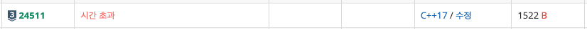
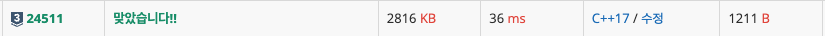
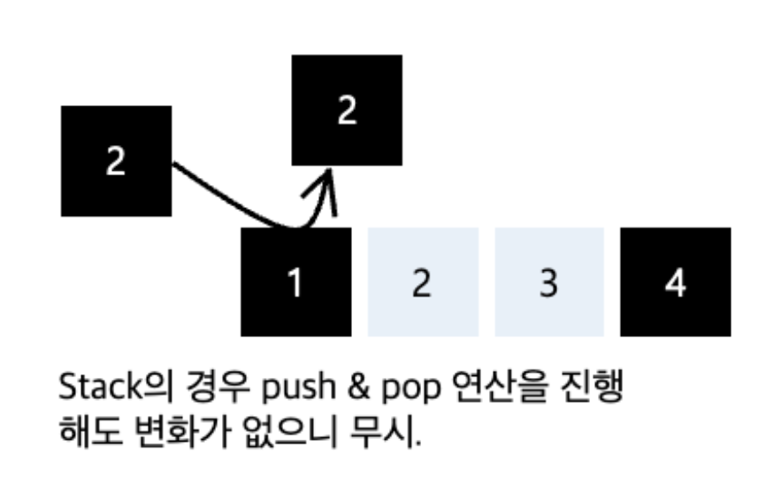
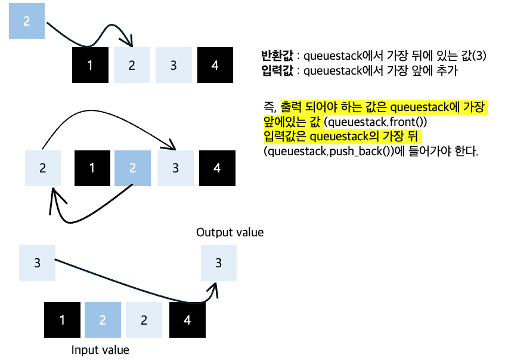
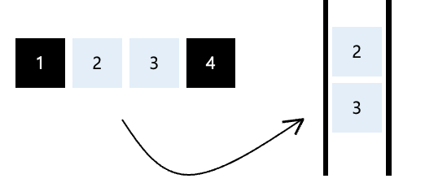

Info
난이도 : SILVER3
유형 : DataStructure
https://www.acmicpc.net/problem/24511
* 잘못된 풀이는 별도의 해설을 작성하지 않으며, 깃허브 링크만 제공합니다.
Solve
풀이1) 문제 요구사항대로 n개의 스택, 큐를 만들어 계산 [실패]
시간복잡도를 전혀 고려하지 않은 풀이라 O(m*n) 100,000,000,00 대략 100s가 걸려 시간초과가 발생했다.

vector<int> res;
for (int i = 0; i < m; i++) {
cin >> x;
for (int j = 0; j < n; j++) {
if (queue_stack[j][0] == 0) { // queue
int temp = queue_stack[j][1];
queue_stack[j][1] = x;
x = temp;
}
}
res.push_back(x);
}https://github.com/novvvv/PS/blob/main/BOJ/2025/C%2B%2B/fail/24511.cpp
PS/BOJ/2025/C++/fail/24511.cpp at main · novvvv/PS
알고리즘 문제 풀이 코드 모음. Contribute to novvvv/PS development by creating an account on GitHub.
github.com
풀이2) stackqueue 전체를 하나의 deque로 판단하여 계산 [성공]
문제 조건에 따라 입력값이 0이면 Queue 1이면 Stack으로 판별한다.

int n; // queuestack 구성 자료구조 개수
cin >> n;
int isQueue[100001]; // 입력값이 Queue(0) 인지 판별하는 배열
for (int i = 0; i < n; i++)
cin >> isQueue[i];
여기서 핵심은 queuestack을 별도의 자료구조가 아닌 하나의 큰 queue로 보는것이다.
Stack의 경우 push & pop 연산을 진행해도 그대로 입력값이 튀어나오니 무시한다.
int input_value;
deque<int> queuestack;
for (int i = 0; i < n; i++) {
cin >> input_value;
if (isQueue[i] == 1) continue;
queuestack.push_front(input_value);
}
int m;
cin >> m;
for (int i = 0; i < m; i++) {
cin >> input_value;
queuestack.push_back(input_value);
cout << queuestack.front() << " ";
queuestack.pop_front();
}
cout << '\n';
아래 로직을 자세하게 풀어보면 다음과같다.
일단 Stack의 경우는 앞서 말한바와 같이 반환값에 영향을 주지 못하고 팅겨나기에 고려하지 않는다.
다음으로 입력값과 출력값이 어떻게 튀어 나오는지에 주목해야 하는데,
아래 그림을 보면 입력값은 queuestack에 가장 뒤에 추가되며
출력값은 queuestack에서 가장 앞에있는 원소이다.

따라서 위 로직을 기반으로 queuestack 구조를 재구성해보면 단순히 하나의 deque와 같아진다.

전체코드
https://github.com/novvvv/PS/blob/main/BOJ/2025/C%2B%2B/24511.cpp
PS/BOJ/2025/C++/24511.cpp at main · novvvv/PS
알고리즘 문제 풀이 코드 모음. Contribute to novvvv/PS development by creating an account on GitHub.
github.com